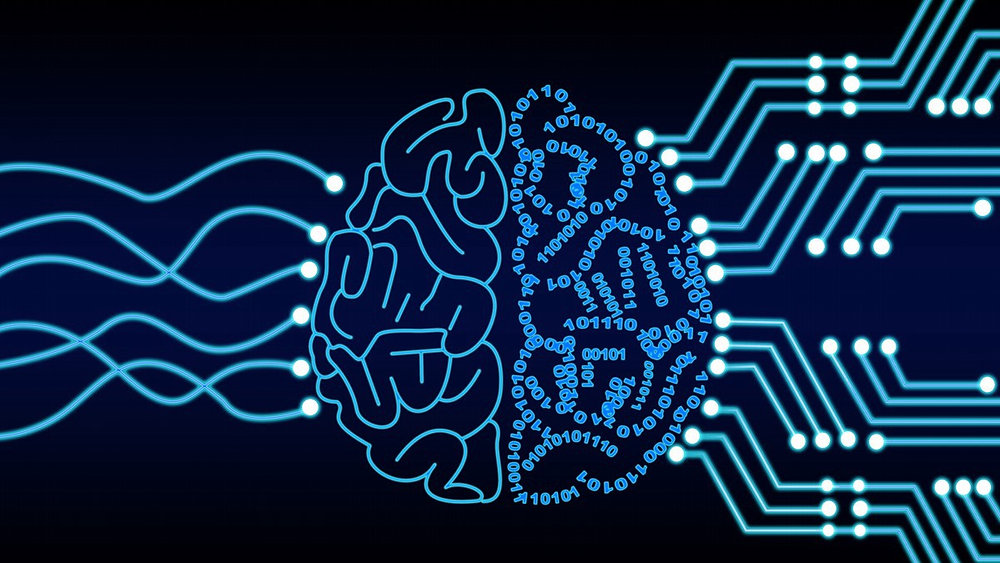

Aprendizagem Profunda e Uso Consciente da IA na Educação: Uma Nova Era de Ensino
A Inteligência Artificial (IA) está transformando rapidamente diversos setores da sociedade, e a educação não ficou de fora dessa revolução tecnológica. Com o avanço da aprendizagem profunda, um ramo especializado da IA, surgem novas possibilidades para personalizar e enriquecer o processo de ensino-aprendizagem. No entanto, especialistas alertam para a importância do uso racional e consciente dessas tecnologias no ambiente educacional.
O que é aprendizagem profunda e como funciona na educação?

A aprendizagem profunda, também conhecida como "deep learning", é uma subcategoria especializada da Inteligência Artificial que utiliza redes neurais com várias camadas para analisar dados e "aprender" padrões complexos. Diferente da IA tradicional, a aprendizagem profunda permite que os sistemas melhorem automaticamente com a experiência, sem necessidade de programação específica para cada tarefa.
Na educação, essa tecnologia está sendo aplicada para criar sistemas que podem adaptar o conteúdo e o ritmo de aprendizado às necessidades individuais de cada estudante. "A IA permite adaptar o conteúdo e o ritmo de aprendizado às necessidades de cada aluno, identificando áreas onde o aluno precisa de mais apoio e oferecendo recursos personalizados", explica um artigo publicado pela plataforma DIO.
Benefícios para estudantes e professores
O uso consciente da IA na educação traz diversos benefícios tanto para alunos quanto para educadores:
Para os estudantes: - Experiências de aprendizado personalizadas que respeitam o ritmo individual - Conteúdos adaptados às necessidades específicas de cada um - Maior engajamento através de recursos interativos e imersivos - Acesso a tutores virtuais disponíveis 24 horas por dia - Possibilidade de aprendizado a distância com qualidade.
Para os professores: - Automação de tarefas administrativas e correções de exercícios - Mais tempo para dedicar à mentoria e ao acompanhamento personalizado - Ferramentas para criação de materiais didáticos sob medida - Análise de dados para identificar padrões de aprendizado e prever desempenho - Recursos para comunicação mais eficiente com os alunos.
"A automação de tarefas permite que os professores se concentrem em atividades que exigem mais criatividade e interação humana", destaca o estudo da DIO sobre o impacto da IA na educação".
Exemplos práticos de uso consciente da IA nas escolas
Diversas escolas já estão implementando a aprendizagem profunda e outras tecnologias de IA de forma consciente e produtiva:
Assistentes virtuais como tutores: Chatbots baseados em IA podem ajudar os estudantes a tirar dúvidas, aprofundar conhecimentos e verificar aprendizados. Alguns desses assistentes, como o Gemini, Claude ou Bing Copilot, permitem até mesmo o upload de imagens ou PDFs para análise e explicação.
Criação de conteúdo educacional: Professores podem utilizar ferramentas de IA para criar imagens, textos e exercícios personalizados, estimulando a criatividade e o pensamento crítico dos alunos.
Sistemas adaptativos de aprendizagem: Plataformas que analisam o desempenho dos estudantes e ajustam automaticamente o conteúdo e a dificuldade das atividades.
Análise de dados educacionais: Ferramentas que ajudam a identificar lacunas de aprendizagem e padrões de desempenho, permitindo intervenções pedagógicas mais precisas.
Segundo a Escola Secundária Augusto Gomes, "a IA generativa, que se refere a modelos de aprendizagem profunda que podem gerar texto, imagens, áudio, código e outros conteúdos com base nos dados nos quais foram treinados, teve um forte desenvolvimento nos últimos dois anos, com inúmeras aplicações disponíveis".
Desafios e uso consciente da tecnologia
Apesar dos benefícios, o uso da IA na educação também apresenta desafios importantes que exigem uma abordagem consciente e ética:
Privacidade e proteção de dados: É fundamental garantir que as informações dos estudantes e professores sejam protegidas adequadamente nos sistemas de IA.
Viés e discriminação: Algoritmos podem reproduzir e amplificar preconceitos existentes se não forem cuidadosamente desenvolvidos e monitorados.
Acesso desigual: Em países em desenvolvimento, obstáculos estruturais como infraestrutura tecnológica limitada e escassez de recursos humanos treinados podem aumentar as desigualdades educacionais.
Papel do professor: A tecnologia deve complementar, não substituir, o papel fundamental do educador no processo de ensino-aprendizagem.
O Observatório de Educação do Instituto Unibanco alerta que "em países em desenvolvimento, essas discussões estão distantes e limitadas por obstáculos estruturais, tais como infraestrutura tecnológica e escassez de recursos humanos treinados na área de IA".
Como promover o uso racional e consciente da IA na educação?
Especialistas recomendam algumas práticas para garantir que a aprendizagem profunda e outras tecnologias de IA sejam utilizadas de forma ética e eficaz no ambiente educacional:
Desenvolver o pensamento crítico: Incentivar estudantes e educadores a questionar e avaliar criticamente os resultados gerados por sistemas de IA.
Investir em formação de professores: Capacitar os educadores para utilizar as ferramentas de IA de forma pedagógica e consciente.
Monitorar o impacto: Avaliar constantemente como essas tecnologias estão afetando o processo de aprendizagem e fazer ajustes quando necessário.
Garantir transparência: Compreender como os sistemas de IA funcionam e tomam decisões é essencial para seu uso consciente.
Promover a equidade: Trabalhar para que todos os estudantes tenham acesso às mesmas oportunidades tecnológicas, independentemente de sua condição socioeconômica.
"É fundamental que os professores incentivem fortemente os seus alunos a terem um espírito crítico apurado para que sejam capazes de compreender e mitigar os eventuais resultados enviesados ou discriminatórios", recomenda a Escola Secundária Augusto Gomes.
O futuro da educação com IA
A integração consciente da aprendizagem profunda e outras tecnologias de IA na educação promete transformar profundamente a forma como ensinamos e aprendemos. No entanto, essa transformação só será verdadeiramente positiva se for guiada por princípios éticos e centrada no ser humano.
O desafio para educadores, desenvolvedores e formuladores de políticas é encontrar o equilíbrio certo entre aproveitar o potencial dessas tecnologias e garantir que elas sejam utilizadas de forma a promover uma educação mais inclusiva, personalizada e de qualidade para todos.